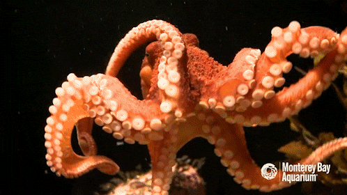

Learning Web Standards
Octopus
Why I Love Octopus
Octopus are my favorite sea creature.
Octopus have three hearts, two pump blood to its gills and one is used to pump blood through its organs
Octopus have the ability to camoflage and be indistinguishable from its surroundings
All octopus are venomous, but not all octopus venom is dangerous to humans